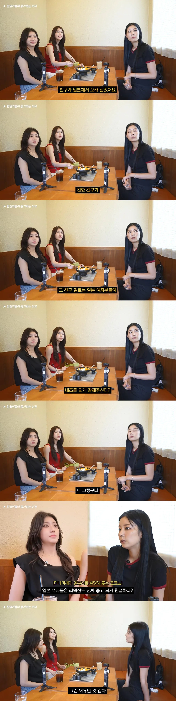

최근 한일 커플이 대폭 증가한 이유
댓글
에이~ 한국도 결혼하면 잘해줄거여~
얼른 결혼하고 애낳아서 연금 건보 배터리를 충전해달라!!
근데 만날려면 일본어 잘해야 되잖아
요즘은 모르겟는데 6년전이랑 2년전에 여행갓을땐 한국어 공부 열풍이엿음 카톡 설치해서 공부까지하더라고 오픈톡 가입해서
만나면서 배우는것도 재미중 하나지
빨간옷 입은분 이뿌다
한국남자들이 계몽당했어요
한국도 리액션 좋고 친절하고 본인한테 해주는 무언가가 크고 작음에 관계없이 감사하는 여자는 이미 품절임
그 비율이 한국보다 일본이 높은거지
스탑럴커 거를려고 하는거지 독빅육아 이러는데
일남한녀 커플은 거의 못본듯
그 이유의 반대가 한남일녀
아 ㅅㅂ존나부럽다
근데 이것도 웃긴게 일녀들도 한국에서 몇년만 살면
알아서 표독한녀화 됨
이거 리얼인게 한일결혼정보회사 피셜 한남들이
한국거주일본인 보다 본토거주 일본인을 더 선호한다함
30대 초반 미혼이면 나같아도 일녀만남..
한국여자들은 바라는게 너무많어..
물론지금은 30대후반 이혼남이라 그냥 사람좋은 한국여자만나서 잘사는중임.. 나랑맞으면 일본이든 한국이든 다좋음
재혼한거임?
36돌싱 공감합니다 나랑맞으면 다좋음
왼쪽 검은옷 개이쁘네
근데 결국 둘중한쪽은 자기나라를 떠나서 타지에 정착해야될텐데 솔직히 쉽지않을꺼같음
화장을 우리나라식으로해서 그냥 구분이 안되네. 오히려 뭔가 더 새로운 점이 있어.
원래 부산 서울쪽에만 있었는데 요샌 대구나 대전에도 일본인 많아짐
av영향도 어느정도 있다고 봄
옛날에도 많았음
물론, 대부분 통일교 관련,
문선명이 죽고 문선명이 마누라랑 아들놈이랑 싸우느라
교세가 쪼그러 들어서 요즘은 많지 않지만...
문선명이 정정하던 80년대
통일교 교세가 존나 쎌때 엄청 많았는데
지금도 이혼하지 않고 국내에 남아 있는
통일교 일본인 할마시들 숫자가 7천명이나 된다고 함
개붕이들 잠에서 깨어날 시간이예용
우리에겐 저런 일이 있을 수가 없어용
걸스데이인거 자랑하는듯 ㅋㅋ